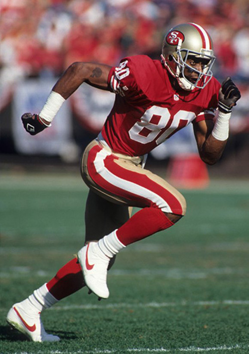

One of the most important things in all of sports is the output. Regardless of how you play and no matter how you win, a win is a win and a loss is a loss. At the end of the day how you get your points, goals or touchdowns doesn't matter;they both cash the same at the bank. With the introduction of flair and gravity, sometimes though, there are things that are done that don't amount to their individual output but helps the team's total output.
When it comes to this topic, there are usually the big four archetypes that everyone usually falls into.
| Output Archetype | Parts of the Archetype | Examples of the Archetype |
|---|---|---|
| Effiecient Killer | Low Flair High Gravity High Output | Tim Duncan Erling Haaland Jerry Rice |
| The Magician | High Flair High Gravity High Output | Lamar Jackson Stephen Curry Neymar |
| The Showman | High Flair Low-Moderate Gravity Low-Moderate Output | Jason Williams Quaresma Jamal Crawford |
| Defense Puller | Low Flair High Gravity Output Varies | Klay Thompson Tyreek Hill Gobert |
Not all output actually matters. Sometimes people just put up empty stats. An example of this would be Cam Thomas when he was on the nets. He scored a lot of points, but that is because he was the only guy on the team that could do that. Not to mention that it all ultimately led to nothing. An example of this would be France scoring 14 goals against Gibraltar in the EURO qualifiers in 2023. Empty goals, as they were way and far the better team as well as already qualifed to make it.
The opposite of that would be Klay Thompson or Stephen Curry, or a Justin Jefferson when he doesn't get that many receptions and yards. Klay and Curry cause problems by just existing, drawing the defense towards them, but because they aren't in the play sometimes, the team scores, but nothing appears on the stat sheet. No point or assist for them, but those only happened because of them. Similar thing happened to Justin Jefferson a while back. The Vikings had a blowout win against the commanders, but Jjettas himself only had 2 recpetions for 11 yards. It wasn't because he was trash that game, but because he was so much of a threat that they made their defense favor his side to that he wouldn't be as much as a threat; which in turn opened up the other side of the field for the team to exploit. The box score doesn't show gravity at all, and it also doesn't show the meaning out the output. 20 points in the final would mean a lot more than 20 points in a 40 point blowout. The boxscore doesn't show that, it only shows the 20.
To really know who's a problem and who is just a showboater, you really have to watch the game. You have to leave the bias aside, because sometimes the eye test bias just takes over completely. On the otherhand, the stat sheet and the advanced statistics as much as they, don't show the full story. A combination of the two is the perfect answer for this, but so far, there is no one statistic that show this.
Fundamentals